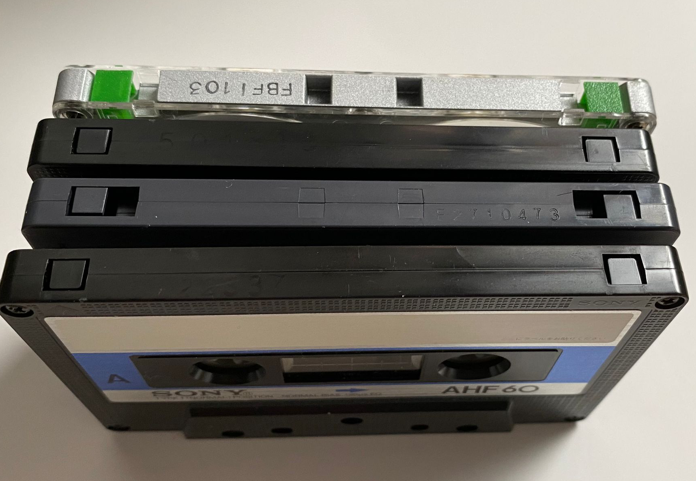
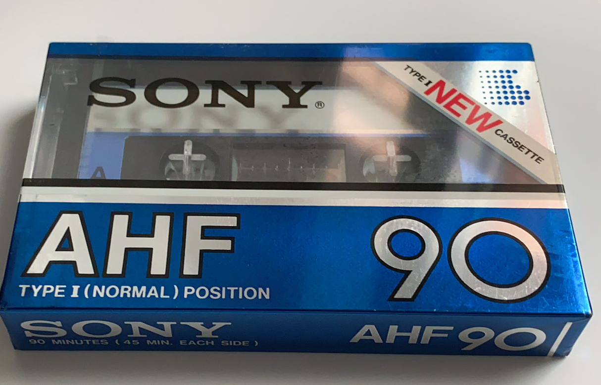
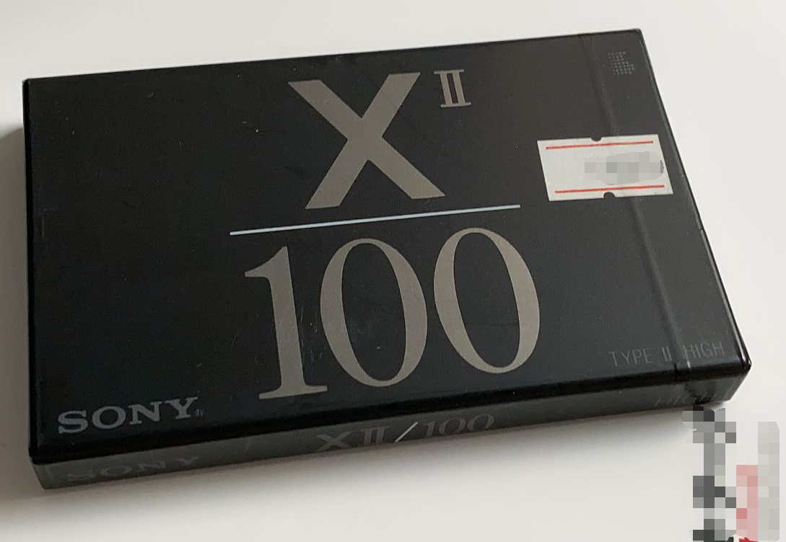
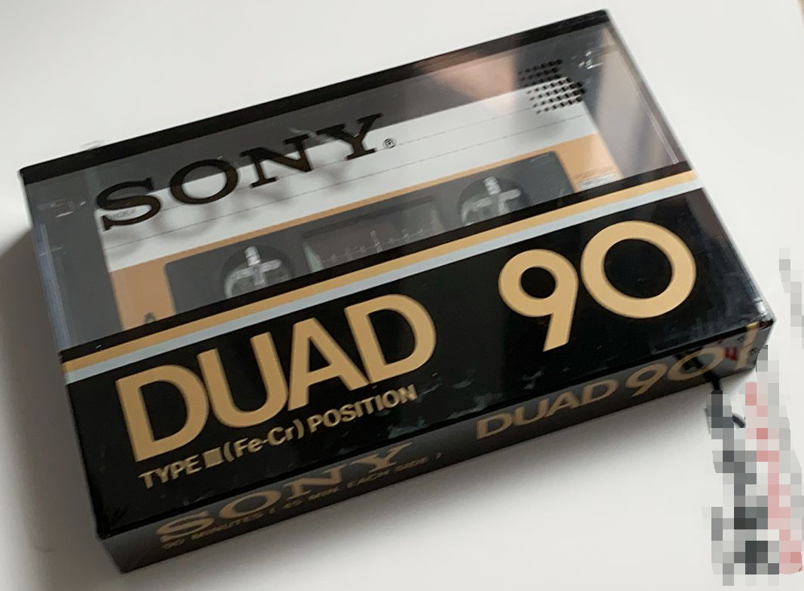
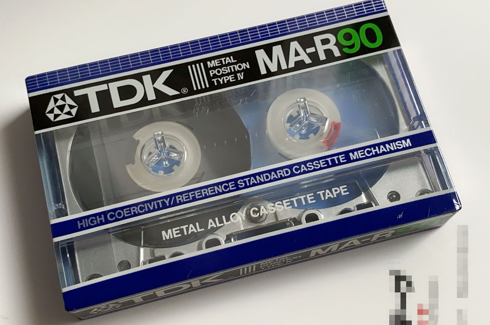

<html>
    <head>
        <meta charset="UTF-8">
        <meta name="viewport" content="width=device-width, initial-scale=1.0">

        <link rel="icon" type="image/png" href="../assets/images/icon.png">

        <!-- issues are stored in its own subdirectory, and therefore another layer of redirection is neccessary to access to site resouces correctly -->
        <link rel="stylesheet" href="../assets/stylesheets/common.css">
        <link rel="stylesheet" href="../assets/stylesheets/issue.css">

        <script src="https://cdnjs.cloudflare.com/ajax/libs/jquery/3.5.1/jquery.min.js"></script>
        <script src="https://cdnjs.cloudflare.com/ajax/libs/handlebars.js/4.7.7/handlebars.min.js"></script>

        <title></title>
    </head> 
    <body>
        <div id="container"></div>
        
        <script src="../assets/scripts/commonPrefix.js"></script>
        <script src="../assets/scripts/issue.js"></script>

        <script type="text/javascript">
            /*
             * It is delibrately chosen to update page content here, since it
             * makes no sense to create individual stylesheet and javascript files 
             * for each individual issue. Besides, on a real website with a backend,
             * we will be obtaining the content for the issue page from a real data
             * store such as database or CDN and will not be hardcoding the content 
             * as we are doing here.
             */
            title += '4';
            content = [
                {
                    title: 'Introduction',
                    content: `
                    
                    <p>Welcome to the 4th issue of Cassette Maniacs! Its a month since our inaugural issue and in this week's content, we will be taking a deep dive into the categories of cassettes available.</p>
                    `,
                },
                {
                    title: 'Type I (Fe<sub>2</sub>O<sub>3</sub>) Tapes',
                    content: `
                    
                    <p>Type I tapes were the most commonly available tapes. It can be used for voice or music recording. Some of the better type I tapes outperformed chrome and even metal tapes. They are capable of recording signals at higher frequency and had excellent bass response.</p>  
                    <p>Type I tape can be seen at the bottommost within the photograph in the introduction. It is distinguishable from the other types by having only a single notch on top, acting as write-protect notches. These work by the tape being writeable when first opened, but when the plastic strip in the notch is clipped off, the tape becomes write protected by mechanical means within the recording machine.</p>
                    
                    `,
                },
                {
                    title: 'Type II (CrO<sub>2</sub>) Tapes',
                    content: `
                    
                    <p>Type II tapes have higher SNR (signal to noise ratio) compared to type I. They excelled in comparison to Type I by having better treble response, while are inferior as they do not have as good a bass response. They tend to have a more natural treble sound in comparison to metal tapes.</p>  
                    <p>Type I tape can be seen as the second to last bottom tape in the photograph in the introduction. They are easily identified by longer notch towards the center on both the left and right side. These notches can be identified mechanically by a machine allowing it to adjust its recording parameters to better fit the properties of the tape type.</p>
                    `,
                },
                {
                    title: 'Type III (Fe.Cr) Tapes',
                    content: `
                    
                    <p>Type III tapes were introduced in 1973 by Sony and advertised as best of both worlds (best of iron and chrome tapes), but was never widely adopted. They combine the bass response of Type I with the treble response of Type II tapes.</p>
                    <p>As they are not common and had a limited run, machines are not adapted to using them. As can be second in the second to top tape in the introduction photograph, the notch configuration of Type III tapes are identical to that of Type I, making it impossible for machines to recognize Type III tapes mechanically.</p>  
                    <p>
                    `,
                },
                {
                    title: 'Type IV (Metal Particle) Tapes',
                    content: `
                    
                    <p>Type IV tapes offers the highest playback quality and are much more expensive. Metal tapes have the highest signal frequency range and lesser hiss compared to Type I tapes. They have the best treble response but less natural treble quality. Metal tapes are also known for lasting much longer and is the best choice for recordings you want to keep for a long time. Metal tapes are the hardest to erase once recorded and </p>  
                    <p>Type IV tapes can be seen at the top in the introduction photograph. They are distinguishable from the other types by having two additional notches near the center of the tape. The photographed Type IV tape have its write-protect strip removed and replaced with green clear tape. This is commonly done to restore the writeable property of the tape.</p>
                    `,
                },
                {
                    title: 'Conclusion',
                    content: `
                    <p>We hope you have a better understanding of the different tape types and are able to make a more informed choice the next time you comb through auction sites looking to expand your collection!</p>
                    <p>In the next issue, we be offering a step-by-step guide for performing maintenance and repair of cassette decks and tips for common problems and their solutions with cassette decks. Make sure to subscribe to us (if you have not already) to avoid missing it! Till next time!</p>
                    `,
                }
            ];
        </script>

        
        <script src="../assets/scripts/commonSuffix.js"></script>
    </body>
</html>